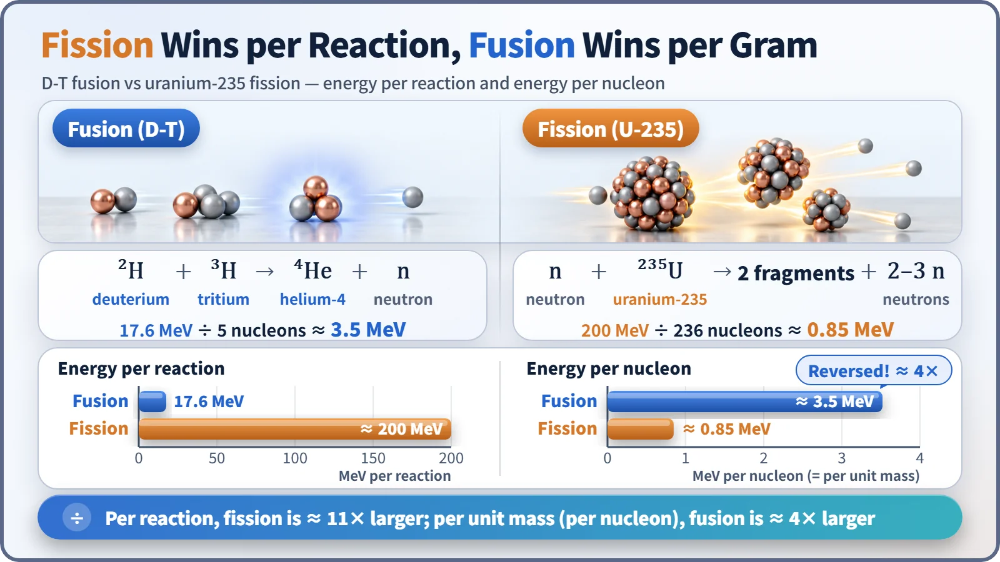
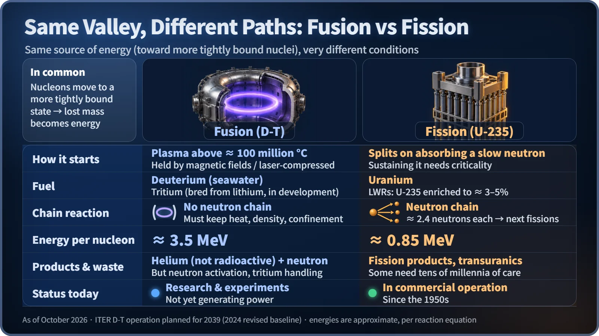

Nuclear Reactions & Fission · 048
Two Slopes, One Valley — How Nuclear Fusion and Fission Are Alike and Different
One joins light nuclei, the other splits heavy ones, yet both roll toward the same tightly bound valley floor near iron.
Fusion joins light nuclei and fission splits heavy ones, but both release energy for the same reason: the nucleons end up more tightly bound, and the tiny bit of mass that goes missing comes out as energy. They differ in how they start, whether they chain-react, what they leave behind and how close they are to everyday use. [1]
Are the Sun and a nuclear power plant on the same team?
The Sun shines by nuclear fusion; today's nuclear power plants make electricity by nuclear fission. One joins, the other splits, so the names sound like opposites. Yet the two share the same underlying principle.
A ball on each side of the valley
Picture a mountain valley with iron sitting at the very bottom. Among atomic nuclei, the ones whose nucleons (protons and neutrons) are bound most tightly, the most stable, are found around iron.
High on the left slope sit light nuclei like hydrogen; high on the right slope sit heavy nuclei like uranium. The balls on the left have to join together to roll down, while the ball on the right has to split apart. Energy comes out in proportion to how far they descend.
In both reactions the nucleons move into a more tightly bound arrangement, the total mass drops by a tiny amount, and that missing mass comes out as energy, the same story as the mass defect. And because both change the nucleus itself, rather than just rearranging electrons as a chemical reaction does, each releases millions of times more energy.
Put the equations side by side
The most promising fusion reaction for power generation is between deuterium (D) and tritium (T), two heavier siblings of hydrogen.
- Fusion: D + T → helium-4 + neutron + 17.6 MeV
- Fission: neutron + uranium-235 → two medium-sized nuclei + 2–3 neutrons + about 200 MeV
Per reaction, fission is about 11 times larger. But divide by the number of nucleons taking part: fusion gets 17.6 MeV from 5 nucleons, about 3.5 MeV each; fission gets 200 MeV from 236, about 0.85 MeV each. For the same weight of fuel, fusion releases about 4 times more energy. The ball on the left simply drops much farther: when light nuclei join, their binding changes dramatically, but when a heavy nucleus splits, it improves only a little. [2]

One threshold is low, the other dizzyingly high
The ball on the right rolls off if a single pebble taps it, and that pebble is a neutron. With no electric charge, a neutron isn't pushed away by the nucleus, so uranium-235 splits after absorbing just one slow, room-temperature neutron. There is no need to heat the fuel, although keeping the splitting going requires conditions in which neutrons steadily carry on to the next fission (criticality).
In front of the balls on the left stands a hump. Both nuclei are positively charged and repel each other. Overcoming that repulsion takes a plasma at roughly 100 million °C or more. Plasma is the fourth state of matter, with electrons stripped from their nuclei. No container can withstand that temperature directly, so the plasma is either held in midair by powerful magnetic fields (a tokamak) or created by squeezing tiny fuel pellets with lasers for an instant. [3]
Only one side has a chain reaction
Each fission releases about 2.4 neutrons on average, and those neutrons trigger the next fissions. That is the chain reaction, and a reactor is finely controlled so that on average exactly one of them causes another fission.
Fusion doesn't work that way. Its neutrons cannot make other nuclei fuse; fusion's trigger is a hot, dense plasma. If confinement falters, the plasma cools and the reaction stops right away, and at any moment the fuel inside amounts to only a few grams. If anything, the challenge is that it goes out too easily.
What they leave behind is different too
The two fragments from fission are neutron-rich, unstable nuclei, so they are radioactive. Together with transuranic elements such as plutonium, formed when uranium swallows neutrons, some of this material must be managed for tens of thousands of years or more. That is why spent fuel is handled as high-level radioactive waste.
Helium, the product of D-T fusion, is a stable gas, so no long-lived fission products are created. But "nothing radioactive to worry about" is wrong. Fast neutrons make the vessel and structures radioactive (neutron activation), and the tritium fuel (half-life 12.3 years) must be kept from leaking. With low-activation materials, most activated structures are expected to drop to low-level waste within about 100 years, but that has not yet been demonstrated in a commercial machine. [2]
One is on the job, the other is still in testing
Fission has been making electricity since the 1950s, and today more than 400 reactors supply about 9% of the world's electricity. As of 2026, no fusion power plant sends electricity to the grid. ITER, the international fusion experiment being built in France by many countries including Korea, installed the sixth of the nine pieces of its core vessel in July 2026, and its main deuterium–tritium experiments are planned for 2039. In 2025 the US National Ignition Facility got out about 4 times the energy its lasers put into the target, but counting the electricity the laser system itself uses, it is not yet a net gain. [4] [5] [6]

Key takeaways
The two reactions are paths down opposite slopes into the same valley. Fission has a low threshold, so its path opened early; fusion drops farther, but a high hump blocks the way. Finding a way over that hump is what fusion research around the world is now focused on.